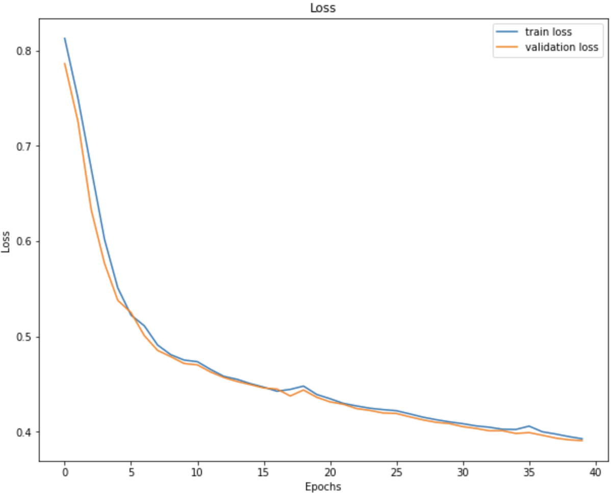
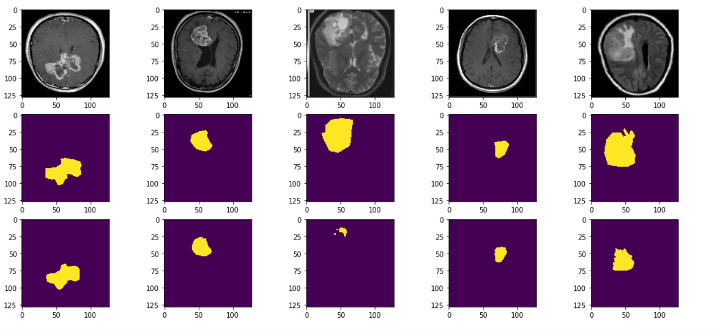

Segmentation des tumeurs cérébrales dans des images IRM :
Les tumeurs cérébrales sont complexes. Il existe de nombreuses anomalies dans leurs tailles et leurs emplacements. Ce qui rend difficile la compréhension complète de la nature de la tumeur. En outre, un neurochirurgien professionnel est requis pour l'analyse IRM.
Souvent, dans les pays en développement, le manque de médecins compétents et le manque de connaissances sur les tumeurs rendent la génération de rapports à partir de la RM très difficile et chronophage.
Ainsi, l'automatisation de cette tâche peut résoudre ce problème
Examples de données :
| Image IRM |
Annotation de la tumeur |
Automatiser la tache de segmentation des tumeurs :
Solution 1 : Architecture UNet
| Architecture |
Evaluation |
 |
 |
Solution 2 : Architecture UNet - CAM
| Architecture |
Evaluation |
 |
 |
Résultats : UNet

Sur des données de Test :
| Image IRM |
Annotation de la tumeur |
Prédiction du modèle |
Résultats : UNet - CAM
Overview :

Sur des données de Test :
| Image IRM |
Annotation de la tumeur |
Prédiction du modèle |